your_data = # plug your awesome dataset here
model = SuperCrossValidator(SuperDuper.fit, your_data, ResNet50, SGDOptimizer)6 - Practical
A Recipe
How to successfully train Deep Learning models? Below is a step-by-step recipe. This recipe is based in part on Andrej Karpathy’s blog post A Recipe for Training Neural Networks.
Karpathy observed that training neural networks with modern ML frameworks is highly abstracted, but these abstractions are “leaky”, meaning that without a deep understanding of internal mechanisms such as back-propagation and gradient descent, mistakes can occur. Therefore, one is not completely protected from understanding what happens within the abstraction.
Moreover, faulty implementations or sub-optimal model training do not lead to an error message. This means training neural networks fails silently. For example, the learning rate might be too high, causing the model to converge too early and achieve sub-optimal performance. Such issues would not be flagged with an error message but would require hyper-parameter tuning or other diagnostic plots.
For these reasons, Karpathy developed a recipe to avoid the most significant pitfalls.
1) Become Familiar with the Data
In the first step, the data to be modeled should be thoroughly inspected. Particularly for images, one can examine sample data points, their distribution, patterns, and anomalies. Corrupted images, skewed class distributions, duplicates, etc., may be found. Often, just by looking, one can gauge if modeling will work or be challenging, assess label quality, or determine how much downscaling images can tolerate.

Figure 2 shows typical challenging cases in modeling images from camera traps. Small ROIs suggest that the image resolution should not be excessively reduced. Typical resolutions like 224x224 might be insufficient for certain species.
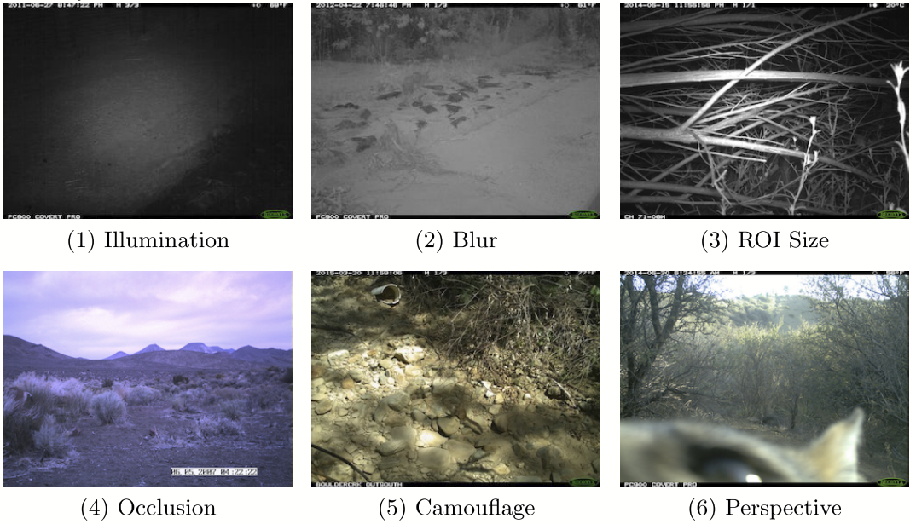
Figure 3 displays the distribution of a typical camera trap dataset. While some species are frequent, others are rare, making modeling difficult and requiring special techniques.
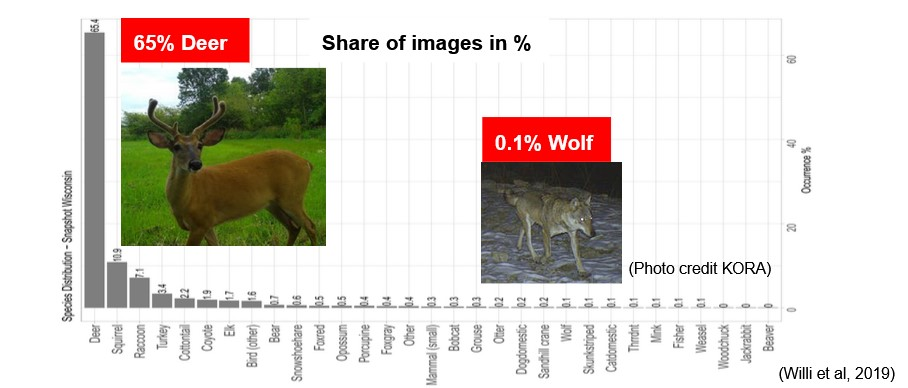
Later in the modeling process, examining misclassified samples is crucial to understand where more data labeling is necessary. Figure 4 shows an example of a rare species that the model misclassified.
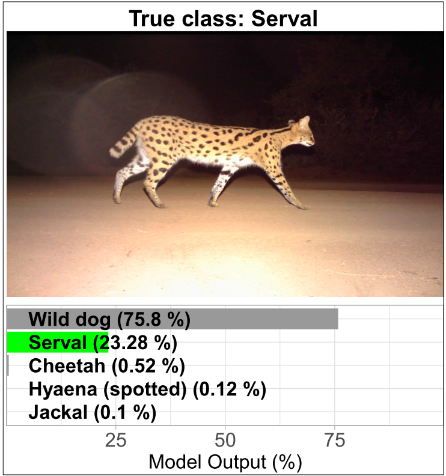
Sometimes, one may also encounter certain limitations, such as images that are ambiguous or belong to multiple classes. Figure 5 shows an example with a herd of animals containing multiple species (Thomson’s and Grant’s Gazelle). Here, consideration of the modeling approach’s suitability is necessary.
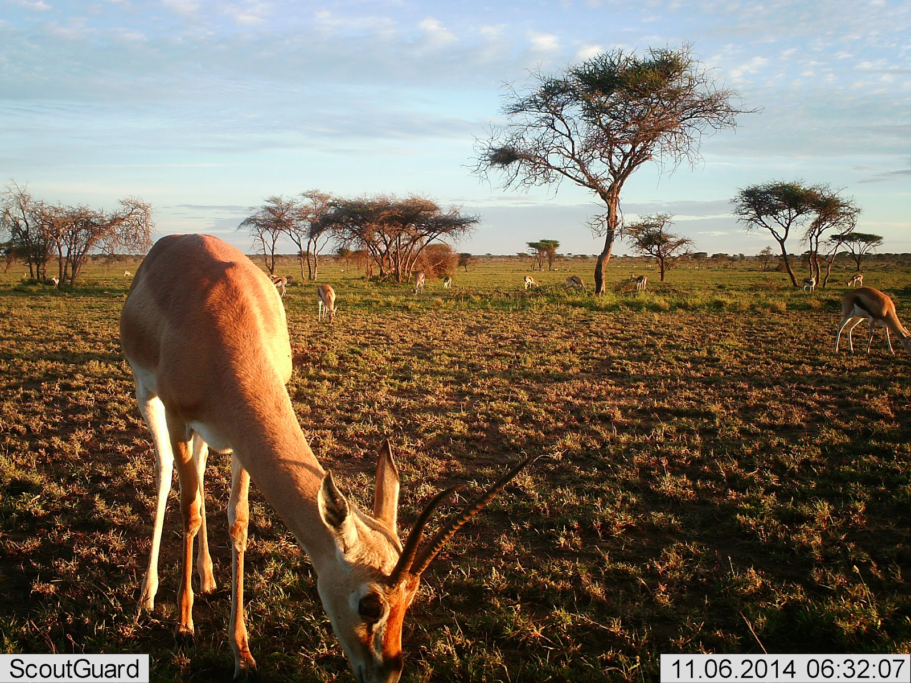
2) Baselines
After becoming familiar with the data, set up an evaluation pipeline. Define a metric to measure model performance and establish train/validation/test splits or cross-validation procedures. Also, implement or use tools for monitoring and logging training.
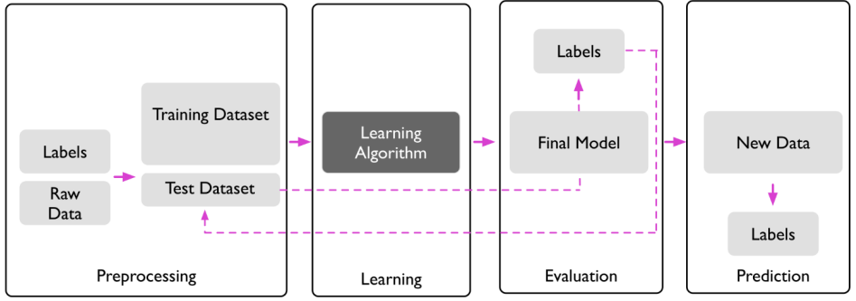
Next, use a simple model, which is unlikely to be incorrectly implemented, to test the pipeline. Visualize metrics, losses, and predictions, and test different hypotheses to verify pipeline accuracy.
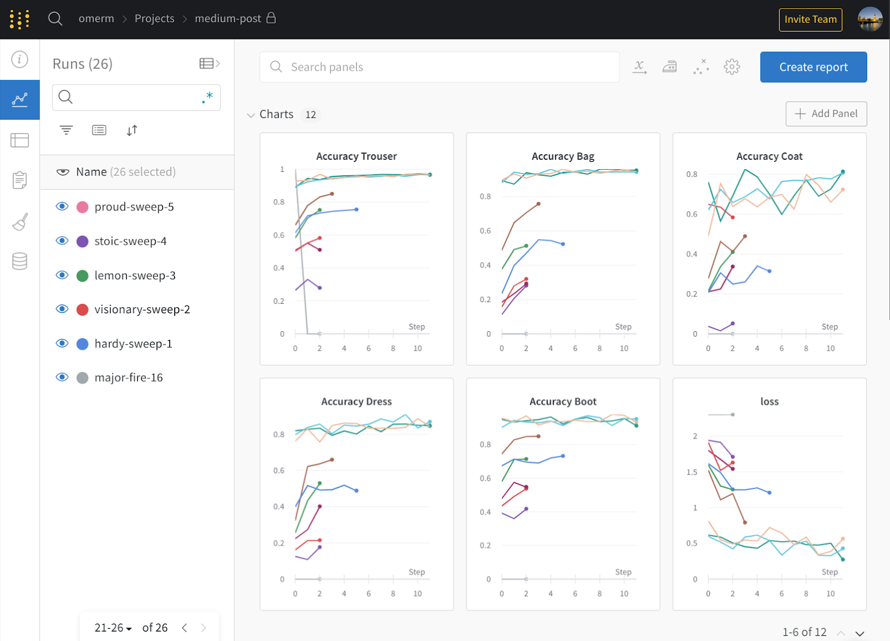
Some Tips for This Step:
Ensure reproducibility by fixing the random seed so that results remain consistent. See PyTorch Reproducibility.
import torch
torch.manual_seed(0)Avoid unnecessary techniques and complexities, such as data augmentation, which may introduce bugs that are hard to detect.
Use a human baseline if possible. For certain tasks, labels may be subjective, with annotators potentially disagreeing on how to label a data point. This implies an upper bound on model performance, which can be estimated by having some data points annotated multiple times. Examples of such images are shown in Figure 8 and Figure 9.
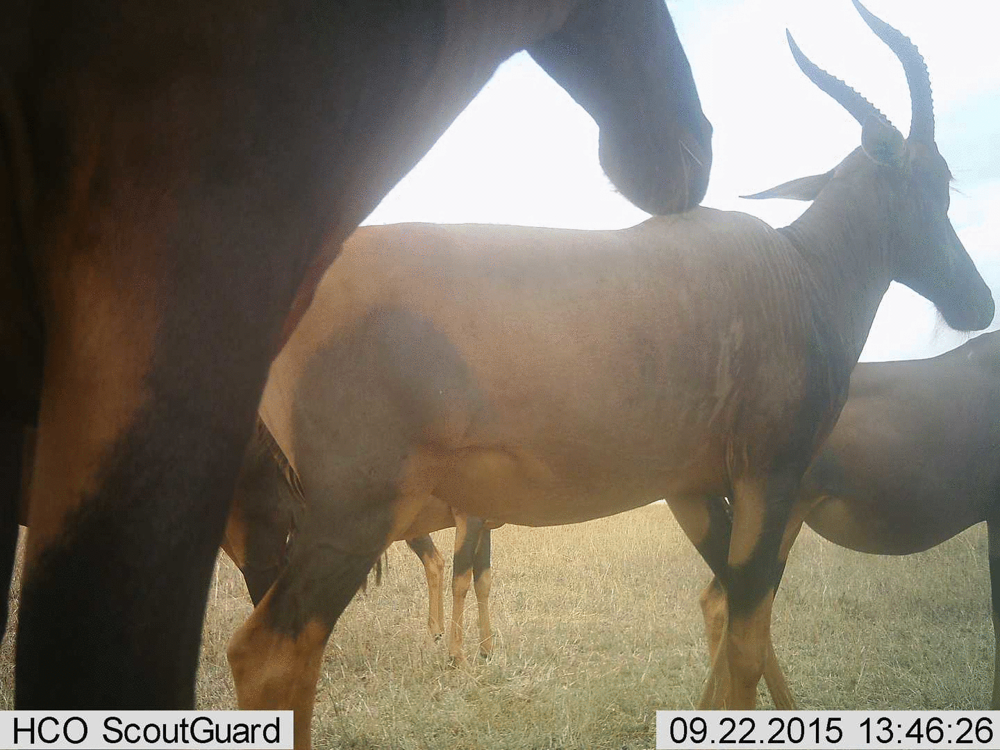
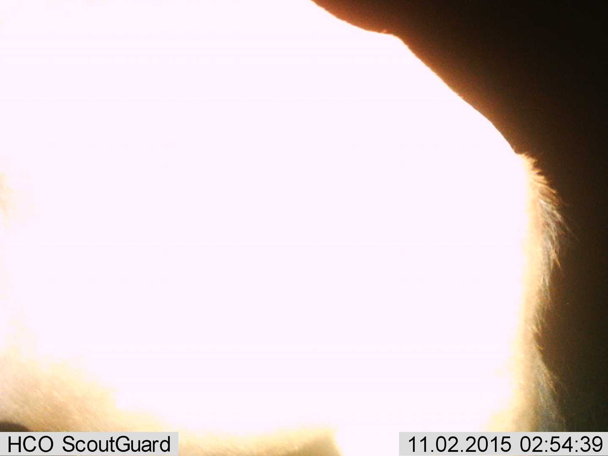
Train an input-independent baseline, setting all pixel values to the same value, such as zero. This helps determine if a simple model is learning anything at all.
Another option is to overfit the model on a batch of data. If everything is functioning correctly, one should achieve perfect train metrics/losses.
It is also helpful to visualize what goes into the model. This can help detect errors in data augmentation or data preprocessing. This should be done just before executing this line of code:
y_hat = model(x)Observing predictions from a fixed sample throughout training can provide insight into the dynamics of the process. In object detection, one might display bounding boxes and classification scores. Figure 10 shows an example of a segmentation problem: the input image is on the left, and the model’s segmentation is on the right.
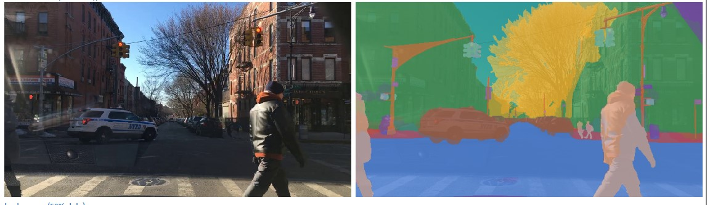
3) Overfit
At this point, you should have a good understanding of the dataset, confidence in the evaluation pipeline, and initial baselines for simple models. Additionally, you should have a sense of how well a human could perform on this task (if relevant). In this step, focus on achieving good performance on the training set, accepting overfitting temporarily. Next, focus on the validation set.
For model architecture, follow the principle “Don’t be a hero.” Use existing, well-established architectures, such as ResNet-50 for image classification.
The choice of optimizer should also be conservative. The adam optimizer is often effective and less sensitive to hyper-parameters like the learning rate.
4) Regularization
At this point, you should have achieved good performance on the training set. Now, shift focus to the validation set, as it is critical for estimating expected performance on new data. This often involves a reduction in training performance due to regularization.
More Training Data
The simplest way to improve performance (and reduce overfitting) is to collect more training data. If possible, this approach is more effective than other methods and helps a model generalize better. The benefit of additional data can be estimated by training several models on different training set sizes and observing performance changes (learning curve).
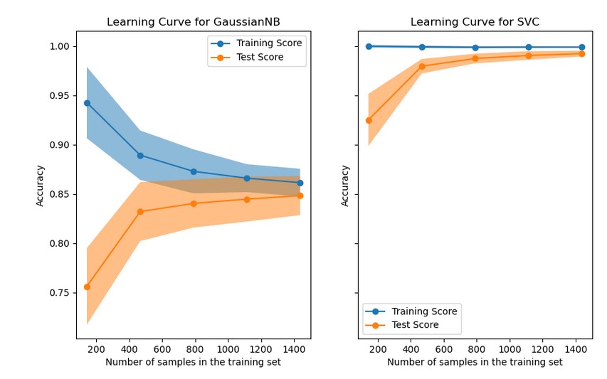
Data Augmentation
Another approach is data augmentation, generating new data points from existing ones by making random alterations. Data points are typically augmented on-the-fly rather than in advance. ML frameworks like PyTorch provide built-in transformations, and additional packages offer more complex augmentations.
For example, AugLy, see Figure 12.
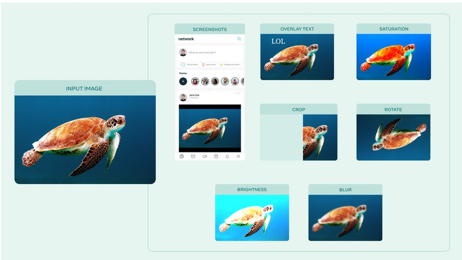
Another option is Albumentations, see Figure 13.
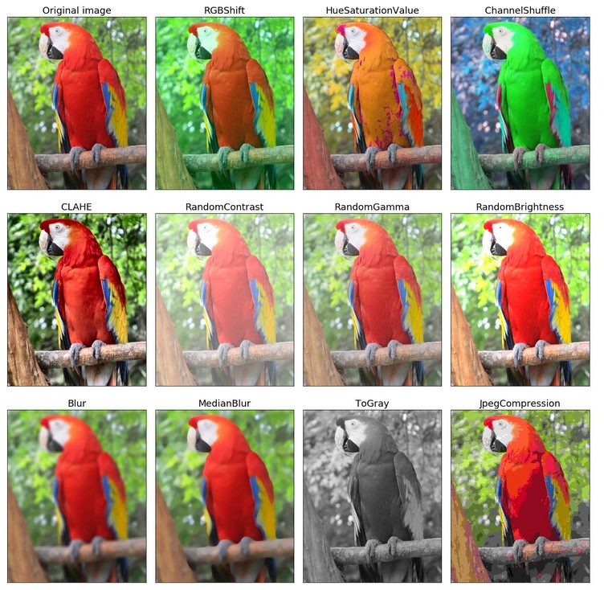
Kornia provides even more complex augmentations, see Figure 14.
Figure 15 shows an example of data augmentation with color changes, cropping, and rotations.
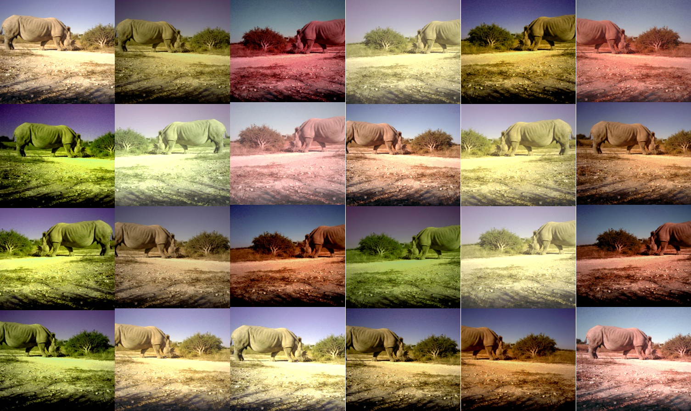
Synthetic data can also be added to the training process, which can be successful. Figure 16 shows an example where 3D models of animals were created using a game engine and placed either in synthetic landscapes or spliced into real camera trap images.
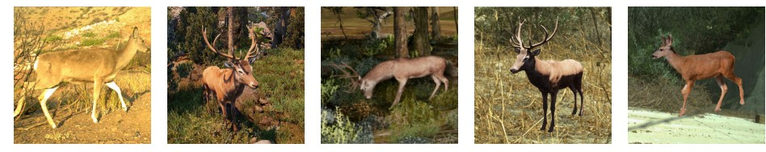
Early Stopping
Early stopping involves training a model and evaluating it on a validation set periodically (e.g., after each epoch). Training is halted if no significant improvement is observed after a set number of cycles, preventing overfitting.

Frameworks like pytorch-lightning provide Callbacks to implement early stopping.
from pytorch_lightning.callbacks.early_stopping import EarlyStopping
class LitModel(LightningModule):
def validation_step(self, batch, batch_idx):
loss = ...
self.log("val_loss", loss)
model = LitModel()
trainer = Trainer(callbacks=[EarlyStopping(monitor="val_loss", mode="min")])
trainer.fit(model)Weight Decay
Weight decay is another common regularization technique. In gradient descent, weights are reduced by a factor \(\lambda\) during each update. The modified update step is:
[ _{t+1} = _t (1 - ) - J() ]
where \(t\) is the iteration, \(\theta\) are the model parameters, and \(\eta\) is the learning rate. This can be applied directly in PyTorch torch.optim.SGD.
Transfer Learning
Transfer learning also has a regularizing effect and can reduce model training time. This approach typically involves using a pre-trained model on a large dataset (e.g., ImageNet), removing the last layer, and replacing it with a new one suited to the target task. Various layers can be frozen or fine-tuned.
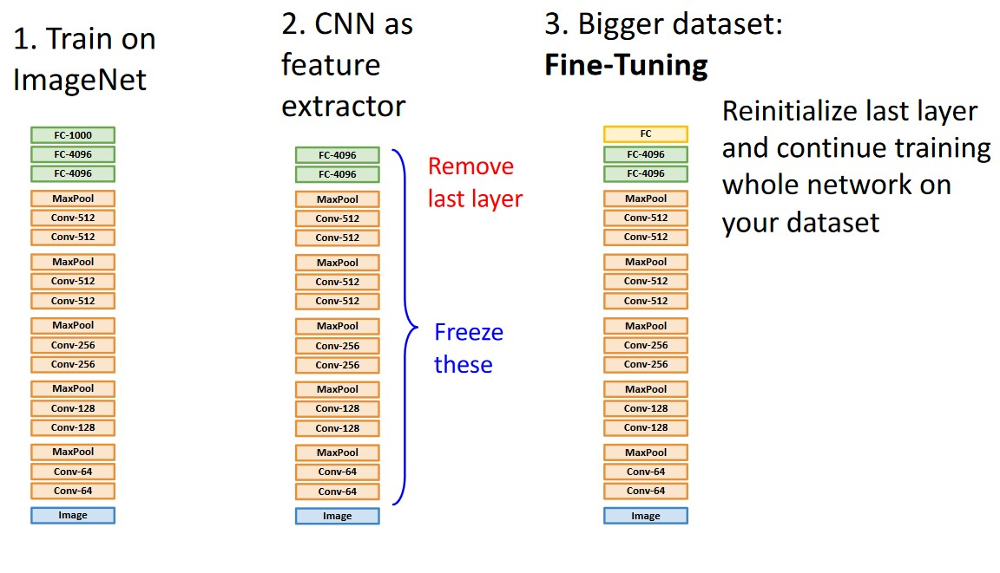
The following example code (PyTorch-Link) shows how to freeze the parameters of a pre-trained model by setting requires_grad = False.
def set_parameter_requires_grad(model, feature_extracting):
if feature_extracting:
for param in model.parameters():
param.requires_grad = False5) Hyper-Parameter Tuning
This step involves systematically evaluating various hyper-parameters and architectures. Techniques include grid-search or random-search, with random-search generally preferred.
Complete packages are available for this, such as Ray Tune.
Hyper-parameter tuning requires configurable architecture implementations. Below is an example of configurable fully connected layers.
class Net(nn.Module):
def __init__(self, l1=120, l2=84):
super(Net, self).__init__()
self.conv1 = nn.Conv2d(3, 6, 5)
self.pool = nn.MaxPool2d(2, 2)
self.conv2 = nn.Conv2d(6, 16, 5)
self.fc1 = nn.Linear(16 * 5 * 5, l1)
self.fc2 = nn.Linear(l1, l2)
self.fc3 = nn.Linear(l2, 10)
def forward(self, x):
x = self.pool(F.relu(self.conv1(x)))
x = self.pool(F.relu(self.conv2(x)))
x = x.view(-1, 16 * 5 * 5)
x = F.relu(self.fc1(x))
x = F.relu(self.fc2(x))
x = self.fc3(x)
return xFor domain-specific problems, consult relevant literature for ideas on possible hyper-parameter variations and architectures (e.g., medical imaging or satellite images).
6) Squeeze out the Juice
Once the best architectures and hyper-parameters are identified, there are additional ways to maximize performance.
One is ensembling: training multiple models and combining their predictions often yields slightly better performance than a single model. However, this increases training and inference costs.
Surprising effects sometimes occur in deep learning, like double descent (Nakkiran et al. (2019)) or grokking (Power et al. (2022)). For instance, using highly complex models (an overfitting risk) can work well, and after a plateau, validation loss might improve if training continues. So it may be worthwhile to train a model longer (without early stopping).
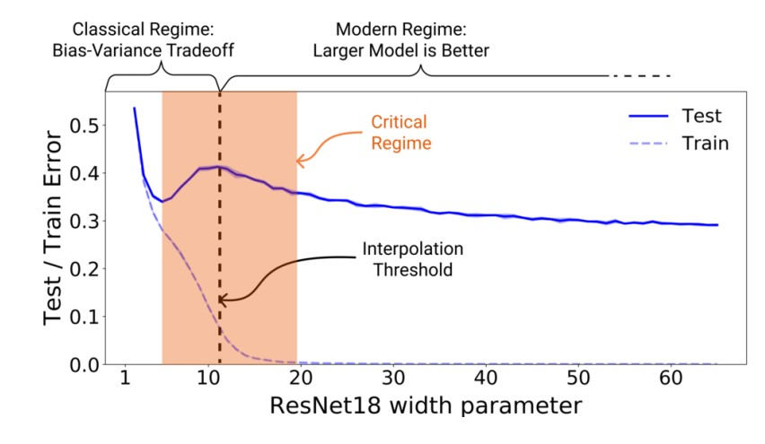
Additional techniques often yield small improvements. For example, Liu et al. (2022) reports that the following techniques improved accuracy by about 2.7%:
- Longer training
- Specialized optimizer (AdamW)
- Complex data augmentation techniques (Mixup, Cutmix, RandAugment)
- Regularization techniques (Stochastic Depth)
- Label smoothing
Model Zoos and Frameworks
Hugging-Face
HuggingFace provides a wide range of models, datasets, and APIs. It offers easy-to-use Python APIs to integrate, use, and adapt models for PyTorch.
timm
PyTorch Image Models (timm) is a library with SOTA models, layers, and functions for using, reproducing, and adapting modern image models.
Code Setup / Configuration
Setting up a well-organized repository structure can significantly aid in model development. Key aspects include reproducibility, configurability, tracking, and logging experiments.
Suggested repository structures:
- DS-cookie cutter: DrivenData
- PyTorch-Lightning example: Lightning Template
- Configurations: Hydra
- Experiment tracking: Weights & Biases, Neptune AI
- Version Control for ML projects: DVC
References
Beery, Sara, Yang Liu, Dan Morris, Jim Piavis, Ashish Kapoor, Markus Meister, Neel Joshi, and Pietro Perona. 2020. “Synthetic Examples Improve Generalization for Rare Classes.” Proceedings - 2020 IEEE Winter Conference on Applications of Computer Vision, WACV 2020, 852–62. https://doi.org/10.1109/WACV45572.2020.9093570.
Beery, Sara, Grant Van Horn, and Pietro Perona. 2018. “Recognition in Terra Incognita.” In Lecture Notes in Computer Science (Including Subseries Lecture Notes in Artificial Intelligence and Lecture Notes in Bioinformatics), 11220 LNCS:472–89. https://doi.org/10.1007/978-3-030-01270-0_28.
Johnson, Justin, and David Fouhey. 2021. “EECS 442: Computer Vision.” Lecture {Notes} / {Slides}. https://web.eecs.umich.edu/~justincj/teaching/eecs442/WI2021/.
Liu, Zhuang, Hanzi Mao, Chao-Yuan Wu, Christoph Feichtenhofer, Trevor Darrell, and Saining Xie. 2022. “A ConvNet for the 2020s.” arXiv. http://arxiv.org/abs/2201.03545.
Nakkiran, Preetum, Boaz Barak, Gal Kaplun, Ilya Sutskever, Yamini Bansal, and Tristan Yang. 2019. “Deep Double Descent: Where Bigger Models and More Data Hurt.” arXiv, 1–24.
Power, Alethea, Yuri Burda, Harri Edwards, Igor Babuschkin, and Vedant Misra. 2022. “Grokking: Generalization Beyond Overfitting on Small Algorithmic Datasets.” arXiv. http://arxiv.org/abs/2201.02177.
Raschka, Sebastian, and Vahid Mirjalili. 2020. Python Machine Learning: Machine Learning and Deep Learning with Python, Scikit-Learn, and TensorFlow. Second edition, fourth release,[fully revised and updated]. Expert Insight. Birmingham Mumbai: Packt Publishing.